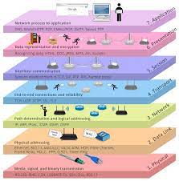

OSI – це семирівнева концептуальна модель комп’ютерної мережі з вертикальною структурою. Розшифровується з англійської як Open Systems Interconnection Basic Reference Model.
Модель OSI має 7 рівнів
Фізичний рівень (англ. Physical Layer) - це найнижчий рівень семирівневої OSI-моделі. Він здійснює передачу бітів по фізичних каналах зв’язку: оптоволокно, вита пара, коаксіальний кабель, радіоканал. На цьому рівні працюють концентратори і повторювачі сигналу, інтерфейси:
Канальний рівень (англ. Data Link Layer) – отримані на фізичному рівні біти, канальний рівень перетворює у кадри, виявляє помилки і коректує їх. Містить 2 підрівні управління: MAC (Media Access Control) та LAC Logical Link Control). Фактично, канальний рівень забезпечує надійну передачу даних з фізичного у наступні рівні (налагоджує канал). Протоколи канального рівня:
Мережевий рівень (англ. Network Layer) – здійснює зв’язок між вузлами (абонентами), тобто надсилає пакети даних до адресата, встановлює мережу. Мережевий рівень відповідає за адресацію і маршрутизацію (управління потоками даних). Ним здійснюється також обробка помилок і мультиплексування. На цьому рівні працюють маршрутизатори і функціонують протоколи:
Транспортний рівень (англ. Transport Layer) – забезпечує передачу даних між програмними компонентами (сервісами, додатками, сеансами, процесами), здійснює управління рухом цих пакетів. Підтримує сегментацію та мультиплексування. Протоколи транспортного рівня:
Сеансовий рівень (англ. Session Layer) – координує та підтримує сеанс з’єднання, дозволяючи програмним засобам взаємодіяти між собою тривалий час. Визначає порти для прийому або передачі даних. Протоколи сеансового рівня:
Рівень представлення даних (англ. Presentative Layer) – здійснює інтерпретацію даних, відповідає за кодування і декодування, тобто перетворює у формат, зрозумілий програмним засобам. Відбувається перетворення з кадру в екранний формат. Також на цьому рівні відбувається стиснення, шифрування даних. Протоколи шостого рівня OSI:
Прикладний рівень (англ. Application Layer) – самий верхній, сьомий рівень OSI-моделі. Забезпечує взаємодію мережі і користувача. Рівень дозволяє програмам отримувати доступ до мережевих служб, здійснювати запити до баз даних, мати доступ до файлів, пересилати електронну пошту. На цьому рівні працюють веб-сайти, програми, застосунки, різні додатки. Протоколи рівня:
Джерело: https://kr-labs.com.ua/blog/model-osi